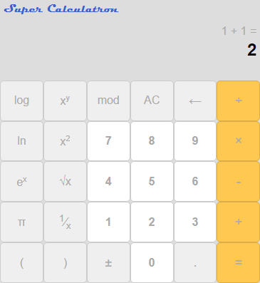

Completed this project via Rithm School.
(Click image to try it)
Good opportunity to mess with HTML Canvas. Battled through some frustration trying to figure out how to load images... and I'd still say I have some questions at this point. One key was the obvious thing - reading the MDN articles on the context object and its methods.
Some of the interesting challenges were:
- Scaling the font with the image size
- Positioning text correctly and getting it to wrap. Positioning text seems so obvious now, but I guess it took me longer than I'd like to admit.
- Writing text on the bottom of the image. I had to write the words backwards, because if there are multiple lines it's (seemingly) much easier to start from the bottom and move up instead of figuring out where the text is supposed to start. This was also the first time I wrote a function with a callback since the code for the top and bottom are similar but different enough to warrant one.
- Figuring out what to do if the image can't be loaded - I'm still not completely sure what to do here. Using img.onerror still results in an error being logged to the console. I tried async await briefly, but really need to understand better how to use that.
Got a lot more practice with manipulating the DOM as well. Especially adding a delete link to an element which deletes the parent node.
Completed this project via The Odin Project.
(Click image to try it)
Finally finished this thing. When I finished the rock-paper-scissors project, I was pretty proud of myself for praciting some Clean Code conventions... well that all went out the window real fast. I'd like to immortilize my worst piece of giant spaghetti code method at the bottom of this post so that I can see how far I've (hopefully) come a year from now. I think if there's anything I want to learn the most, it's how to break a problem down into clean, generalized statements.
This project provided plenty of headaches, and only felt marginally better by the end. Having been working on data structures and algorithms a bit, there were a few things I knew I'd want to try in my approach from the beginning:
- Polish Notation - This had come up once on Leetcode and I ignored it because I couldn't make sense of it. Then it came up again on the Runestone Data Structures and Algorithms course so I looked it up:
- If someone enters something like: 4 × 5 ^ 2 + 17 - 10 / 5 + 14 × 2 = - how does your program know what order to do those calculations in? Do you go through the whole list and find expontents first, then multiplication and division, then addition and subtraction? What if there are parentheses? Or single variable functions like log and ln?
- Looking at the first statement only - 4 × 5 ^ 2 - Polish Notation converts it to - 4 5 2 ^ × - so now everything is in order of precedence.
- So now if you want to evaluate this first statement, you just put each value onto a stack, and everytime you run into an operator, you call the function that evaluates that operator and apply it to the last one or two elements on the stack depending on what type of operator it is.
- 4 [5 2] {^} × - becomes:
- [4 25] {×} - which then becomes:
- 100 - and the whole statement in Polish notation would look like:
- 4 5 2 ^ × 17 + 10 5 / - 14 2 × +
- Bam! So it takes two passes to convert a list into Polish Notation and evaluate it
- History Bar - It's not in the screenshot, but it's the area on the right side of the calculator that shows you all the calculations you've made and their resutls. I figured this would be as easy as using a really basic Queue (as in, nothing fancy besides Unshifting and Popping an array). I was right; it took like twenty minutes to do this part (woohoo!)
- Scientific Notation - This was the big issue. Instead of spending a bunch of time up front figuring out how a calculator worked, I tried making it up on my own. This worked for all of basically no time at all before I started getting into "Rule Hell" where I'd have to write a new if-statement for every new rule that I thought of:
- Entering a value seems simple enough, just set the current value on the display... wait I'm only typing one digit at a time, ok so if the display is zero then set it to the value, otherwise concatenate the value.
- Damnit the value is negative zero, I guess I gotta check the absolute value first
- But what if the last input was a right paren? Do I add a multiplication sign in there like I'm doing math on paper? Oh looks like the windows calculator deletes the whole statement in the parentheses... darn now I gotta write a method to find the last parenthesis. Or maybe I'll keep an input buffer of the current calculation and then push it to the main list once.... once what... once they do a new operator? But what if there are open parens still, I guess I gotta check for that.
- Oh wait that wasn't just closed paren, it was a log function... ugh ok I have to find the last function outside the parentheses in case the last input was a function, or just the left paren in case they just entered a paren
- Ok moving on to parentheses. I guess you can do an open paren any time you want; what about a closed paren? It doesn't make sense to have that after they entered an operator, or right after a left paren, so I guess I'll just stop them from doing that?
- Damnit, it looks like the windows calculator just inserts the current display value when you try something like that
- And on and on for maybe a week....
I went through a few iterations before ending up with several hundred lines of code. By the end there were times where I was deleting great big blocks of junmbled nonsense and simplifying things into more generic methods, and that felt great. Still not a very good job overall, but hopefully I'll learn from this!
The big spaghetti method:
pushInputToList() {
if(this.currInputType === 'operator') {
if(this.inputList.length === 0) {
this.inputList.push(this.convertToNum(this.displayInput),this.currInput);
this.setDisplayInput(this.convertToNum(this.displayInput));
} else if(this.lastInputType === 'operator') {
this.inputList.pop();
this.inputList.push(this.currInput);
} else if(this.lastInputType === 'value' || this.lastInput === '(') {
this.inputList.push(this.convertToNum(this.displayInput));
this.setDisplayInput(this.evaluateCurrent());
this.inputList.push(this.currInput);
} else if(this.peakInputList() === ')') {
this.inputList.push(this.currInput);
}
this.setLastInput(this.currInput);
} else if(this.currInputType === 'shortop') {
if (this.inputList.length === 0) {
this.inputList.push(this.currInput,'(',this.convertToNum(this.displayInput),')');
} else if (this.lastInputType === 'shortop') {
this.pushShortOpToList();
} else if(this.lastInput === ')') {
this.inputList.splice(this.findLeftParen(),0,this.currInput);
} else {
this.inputList.push(this.currInput,'(',this.convertToNum(this.displayInput),')');
}
this.setDisplayInput(this.convertToNum(this.evaluateCurrent()));
this.setLastInput(this.currInput);
} else if(this.currInputType === 'paren') {
if(this.currInput === '(') {
if(this.peakInputList() === ')') {
this.inputList.push('×');
}
this.inputList.push(this.currInput);
this.resetDisplayInput();
this.setLastInput(this.currInput);
} else if(this.currInput === ')' && this.validRightParen()) {
if(this.peakInputList() === ')') {
this.inputList.push(this.currInput);
} else {
this.inputList.push(this.convertToNum(this.displayInput),this.currInput);
}
this.setDisplayInput(this.evaluateCurrent());
this.setLastInput(this.currInput);
}
} else if(this.currInputType === 'value') {
if(this.lastInputType === 'value' || this.lastInput === '.') {
if(this.displayInput === '0' || this.currInput === 'π') {
this.setDisplayInput(this.currInput);
} else {
this.setDisplayInput(this.displayInput + this.currInput);
}
} else if(this.lastInputType === 'shortop') {
this.removeLast('shortop');
this.setDisplayInput(this.currInput);
} else {
if(this.lastInput === ')') {
this.removeLast('paren');
}
this.setDisplayInput(this.currInput);
}
this.setLastInput(this.currInput);
}
}
Version one at least - it's looking pretty static right now.
Some things of note:
- CSS Variables could be so useful. Gotta use them in the future
- I was reminded of the days of PHP where you could set the root directory to a variable and use that to reference all your stylesheets / files instead of manually typing out paths. I know you can do ~/ to start from the root, but the root is not the same on localhost and web host. Maybe there's some other trick I need to figure out.
- Learning to load content with JS and some backend code (Node?) sounds like it's going to be great as well.
- Gotta make this look more professional at some point in the future.. maybe start a to-do list.
Completed this project via The Odin Project.
(Click image to try it)
I had a bunch more ideas for features to add, like creating different layers that get swapped via a queue so you could mix colors / undo things. Ultimately I learned some of the limits of JS when it comes to styling divs based on mouseover - much more than a seven-bit grid (need to find a font with numbers or pay for this one haha) of divs and it starts to get pretty laggy (at least on my computer).
Compared to the Rock-Paper-Scissors project, there were way fewer visual elements, and as a result way fewer hours / lines of code used for this one. Lesson learned for the future :).
Completed this project via The Odin Project.

(Click image to try it)
Really basic app, but I was able to test a lot of different ideas, which resulted in some great leassons learned:
Levenshtein Distance
I used this to match what the user types against the words 'rock', 'paper' and 'scissors'. Originally this was a console based project, so I figured it would be a cool opportunity to practice something like that
It's a cool algorithm for measuring the distane between two strings. It has a nice dynamic programming algorithm (example), that can be tweaked depending on how you want to make the comparison. I think I read something like this is used in spell checkers.
The gist:
- Make a two-dimensional matrix with word A on top and word B on the left
- Add one point (or whatever you want) if you have to delete an extra letter from word A
- Add one point (or whatever you want) if you have to change a letter from word A to word B
- Add zero points if the letter is present in both
- Find the minimum sum to get from word A to word B
Asynchronous Javascript
Ok I spent way too much time on this one. Wwhen the computer makes its character selection, I originally wanted it to scroll through the different character protraits by turning the three classes on and off... I thought this would be a good opporunity to use setTimeout, but did not realize those functions are not run in order, only out of order with the regular code.
My next attempt was to use a promise.then().then() or something along those loines, but didn't have any better luck. I'm pretty confident that was one of the viable methods, but I'll come back to this later.
Ultimately I just made the character highlight move from the player to the computer and wait something close to a second before displaying both characters and the result of each round. Makes it a little more dramatic I guess?
Clean Code
From this awesome article. I also bought the clean code book and hope to read it at some point
I got to practice and see the benefits of some clean code concepts. Though I don't think my code is clean at all there were a few concepts that made it way better than it would have been otherwise.
- Function arguments (two or fewer ideally) - The idea is to greatly reduce the complexity when testing. I did my best on this one (I think I achieved it?). If I thought I needed more than two arguments, I tried to find another way to do it. Though there were a few methods that allowed any number of arguments because it looped through hopefuly identicle selectors.
- Functions should do one thing - This one I really noticed the benefits of. There were several methods that I reused over and over again in different contexts, and it felt so nice when I didn't feel like I needed to change anything.
- Function names should say what they do - I had to go back a few times and rename methods because I had a hard time coming up with the right descriptions, but this helped a lot when I had to go back and figure out what my code was doing.
- Avoid mentail mapping - Instead of using letters for variables, I tried to name the variables so I could figure out what they were for when I went back
- Make objects have private members - Uh, I briefly attempted to do this, but it's on my to-do list for future projects.
There were others, but I think this is a good start!